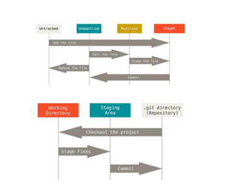

Git est un logiciel de versioning créé en 2005 par Linus Torvalds, le créateur de Linux. Un logiciel de versioning, ou logiciel de gestion de version est un logiciel qui permet de conserver un historique des modifications effectuées sur un projet afin de pouvoir rapidement identifier les changements effectués et de revenir à une ancienne version en cas de problème. Les logiciels de gestion de versions sont quasiment incontournables aujourd’hui car ils facilitent grandement la gestion de projets et car ils permettent de travailler en équipe de manière beaucoup plus efficace. Parmi les logiciels de gestion de versions, Git est le leader incontesté et il est donc indispensable pour tout développeur de savoir utiliser Git.
2) A quoi sert un système de gestion de version :
Imaginez que vous possédiez un site web. On vient ainsi de créer
un système de gestion de version décentralisé rudimentaire.
Grosso-modo, les logiciels de versioning et Git en particulier vont nous permettre d’effectuer ces opérations mais de manière beaucoup plus robuste et avec de nombreuses fonctionnalités supplémentaires très utiles (possibilité de synchroniser son dossier local avec le serveur, connexion aux autres projets et mise à jour desdifférences automatisée, etc .
Git permet de coordonner le travail entre plusieurs personnes en conservant un historique des changements effectués sur des fichiers.
Git permet à différentes versions d’un même fichier de coexister. Les développeurs
travaillant avec Git ont accès à l’historique des modifications pour l’intégralité du
projet et peuvent ainsi savoir quels changements ont été fait par rapport à leur version
des fichiers, qui a fait ces changements, etc.
3)Les deux modèles des logiciels de gestion de version :
modèle centralisé vs modèle décentralisé
Les logiciels de gestion de version sont aujourd’hui tous construits sur l’un des deux modèles suivants : le modèle centralisé ou le modèle décentralisé encore appelé modèle distribué.
Le principe de base d’un modèle centralisé est la centralisation du code source lié au
projet : la source du code du projet est hébergée sur un serveur distant central et les
différents utilisateurs doivent se connecter à ce serveur pour travailler sur ce code.
Dans un modèle distribué le principe de base est opposé : le code source du projet est
toujours hébergé sur un serveur distant mais chaque utilisateur est invité à télécharger
et à héberger l’intégralité du code source du projet sur sa propre machine.
Le modèle distribué a été popularisé par Git et présente différents avantages notables
par rapport au modèle centralisé :
Simplicité / flexibilité du travail : Comme chaque utilisateur peut héberger le code du projet, on n’a plus besoin d’être constamment connecté à un serveur central et on peut donc travailler en ligne sur sa
propre machine ; Git va nous permettre d’enregistrer les différentes modifications effectuées sur un projet et de pouvoir retourner à une version précédente du projet.
4) GitHub :
GitHub est un service en ligne qui permet d’héberger des dépôts ou repo Git. C’est le plus
grand hébergeur de dépôts Git du monde Dans le langage des systèmes de gestion de version, la copie de l’intégralité des fichiers d’un
projet et de leur version située sur le serveur central est appelé un dépôt. C’est le plus
grand hébergeur de dépôts Git du monde.
Une grande partie des dépôts hébergés sur GitHub sont publics, ce qui signifie que n’importe
qui peut télécharger le code de ces dépôts et contribuer à leur développement en proposant
de nouvelles fonctionnalités.
Pour récapituler, et afin d’être bien clair sur ce point : Git est un logiciel de gestion de version
tandis que GitHub est un service en ligne d’hébergement de dépôts Git qui fait office de
serveur central pour ces dépôts.
Git
5) Utiliser Git :
On peut utiliser différents types d’interfaces pour installer et pour utiliser Git. Nous faisons ce choix pour différentes raisons:
Utiliser la ligne de commande est le seul moyen d’avoir accès à toutes
les commandes Git
Toutes les personnes vont avoir accès aux mêmes commandes avec la
ligne de commande, ce qui signifie que tout le monde pourra suivre ce
cours de la même façon
Si vous savez comment utiliser la version en ligne de commande, vous
saurez utiliser n’importe quelle autre interface graphique.
En Windows, pour ouvrir la ligne de commande :
Raccourcie : touche windows + R + cmd
Dans la barre de recherche, rechercher cmd
7) Paramétrage de Git :
Une fois Git installé, nous allons paramétrer le logiciel afin d’enregistrer certaines données
pour ne pas avoir à les fournir à nouveau plus tard.
Nous allons notamment ici renseigner un nom d’utilisateur et une adresse mail que Git devra utiliser ensuite.
Pour faire cela, nous allons utiliser notre première commande Git qui est la commande git
config.
Nous allons également passer une option --global qui va nous permettre d’indiquer à Git que le nom d’utilisateur et
l’adresse mail renseignés doivent être utilisés globalement
Pour vous assurer que vos informations ont bien été enregistrées, vous pouvez
taper "git config user.name" et "git config user.email".
6) Installation de Git :
La façon la plus simple d’installer Git est de télécharger la dernière version sur le site
officiel
http://git-scm.com/downloads
puis d’ouvrir le fichier téléchargé et de suivre les
instructions à l’écran en laissant toutes les valeurs par défaut.
8) Démarrer un dépôt Git :
Un “dépôt” correspond à la copie et à l’importation de l’ensemble des fichiers d’un Projet dans Git. Il existe deux façons de créer un dépôt Git :
On peut importer un répertoire déjà existant dans Git .
On peut cloner un dépôt Git déjà existant.
9) La gestion des informations selon Git :
La façon dont Git considère les données est assez différente de la plupart des autres systèmes
de gestion de version. Git pense les données à la manière d’un flux d’instantanés ou “snapshots”. Grosso modo, à chaque fois qu’on va valider ou enregistrer l’état d’un projet dans Git, il va prendre un instantané du contenu de l’espace de travail à ce moment et va enregistrer une référence à cet instantané pour qu’on puisse y accéder par la suite. Chaque instantané est stocké dans une base de données locale, c’est-à-dire une base de données située sur notre propre machine. Le fait que l’on dispose de l’historique complet d’un projet localement fait que la grande majorité des opérations de Git peuvent être réalisées localement,c’est-à-dire sans avoir à être
connecté à un serveur central distant.
10) Les états des fichiers :
Un fichier modifié est considéré comme “modifié” par Git tant qu’il n’a pas été indexé. On dit qu’on “indexe” un fichier lorsqu’on indique à Git que le fichier modifié ou que le nouveau fichier doit faire partie du prochain instantané dans sa version actuelle. lorsqu’on demande à Git de prendre l’instantané, c’est-à-dire lorsqu’on lui demande d’enregistrer en base l’état du projet actuel, les fichiers faisant partie de l’instantané sont à nouveau considérés comme “validés” et le cycle peut recommencer.
11) Les zones de travail :

Les états de fichiers sont liés à des zones de travail dans Git.
12) Créer un dépôt Git à partir d’un répertoire existant :
souvent existe il dans Git, des projets en cours stockés localement sur notre machine ou sur serveur distant, et pour lesquels on cherche à implémenter un système de gestion de version.
On importe l’ensemble des ressources d’un projet dans Git. De suite on crée un répertoire “projet-git” qui se trouve sur bureau et qui contient deux fichiers texte vides “fichier1.txt” et “README.txt”.
cd : permet de se positionner à un emplacement dans le PC
dir : permet d’afficher la liste des dossiers et fichiers dans l’emplacement actuel.
Pour initialiser un dépôt Git, on utilise la commande git init. Cela crée un sous répertoire « .git » qui contient un ensemble de fichiers qui vont permettre à un dépôt Git de fonctionner.
git init permet Git a renvoir un message informant que le dépôt Git a été initialisé et qu’il est vide.
On utilise la commande git status pour déterminer l’état des fichiers du répertoire.
git status nous informera que notre projet possède deux fichiers qui ne sont pas sous suivi de version (“untracked”) et qui sont les fichiers “README.txt” et “ficiher1.txt”, en plus qu’aucun fichier n’a été validé (“commit”) en base pour le moment ni ajouté pour validation, et indique la branche ou on se trouve (“master” ici).
Pour ajoutés en base, afin de pouvoir avoir un premier historique de version on index le fichier.
on index des fichiers par utiliser la commande git add. On peut lui passer un nom de fichier pour indexer le fichier en question le nom d’un répertoire pour indexer tous les fichiers du répertoire d’un coup ou encore un “fileglob” pour ajouter tous les fichiers correspondant au schéma fourni.
Les fileglobs utilisent les extensions de chemin de fichier. Signifiant que les caractères comme « * » et « ? » vont posséder une signification spéciale et nous permettre de créer des schémas de correspondances.
git status informe qu’a maintenant deux nouveaux fichiers sont ajoutés à l’index. La commande git add permet également d’indexer des fichiers déjà sous suivi de version et de placer sous suivi des fichiers non suivi.
L’apparition des fichiers dans la section “changes to be committed” Permet de savoir qu’ils ont été ajouter.
Pour valider ces fichiers et les ajouter en base, on utilise la commande git commit.
Lorsqu’on utilise git commit sans argument, une nouvelle fenêtre s’ouvre en utilisant l’éditeur par défaut qui est dans la majorité des cas VIM.
Bien documenter chaque commit permet aux auteurs de rapidement comprendre les modifications et de pouvoir les valider. Ça peut se faire avec un message.
Une fois le message entré, si votre éditeur est bien VIM, il faut appuyer sur la touche esc” pour sortir du mode insertion puis taper :wq et entree pour valider et quitter ou :x et entree ou tout simplement ZZ.
13) Cloner un dépôt Git
La deuxième façon de démarrer un dépôt Git est de cloner localement un dépôt Git déjà existant. Pour cela, il faut utiliser la commande Git clone.
Créez un repo sur GitHub, Apres avoir créer un repo sur GitHub. Transmettre des fichiers à ce repo est possible. git branch -M main
git remote add origin https://github.com/BouchekirRedouane/ExmpleCloneGit.git
git push -u origin main
Si on vérifier notre repo sur GitHub, on peut voir les deux fichiers
14) Ajouter ou modifier des fichiers dans un projet et actualiser notre dépôt Git :
En ce moment, on possède un projet contenant un ensemble de fichiers ainsi qu’un dépôt Git qui gère les versions du projet.
On indique les changements au bout du travail à Git pour qu’il conserve un historique des versions
auquel on pourra ensuite accéder pour revenir à un état précédent du projet .
Quand on souhaite enregistrer une modification de fichier un ajout, on utilise les commandes git add et git commit.
le commit d’un fichier se basera sur l’état de ce fichier au moment du git add.
pour enregistrer la dernière version d’un fichier, effectuer un git add juste avant un git commit. Pour mettre les fichiers modifiés et déjà sous suivi dans la zone d’index, utiliser git commit avec une option -a. Cela vous dispense d’avoir à taper git add.
15) Consulter l’historique des modifications Git :
La plus simple manière Git est d’utiliser la commande git log. Cette commande affiche la liste des commits réalisés du plus récent au plus ancien.
16) Annuler des modifications apportées à un fichier :
“roll back“ : pouvoir revenir à un état antérieur enregistré d’un projet. Une utilisation importante de git.
Après un commit, on va continuer à travailler sur nos fichiers et à les modifier. Cependant certaines modifications n’apporte pas les comportements espérés et on voudra revenir à l’état du fichier du dernier instantané Git.
On va pouvoir faire cela avec la commande générale git checkout -- nom-du-fichier ou la nouvelle commande spécialisée git restore.
17) Qu’est-ce qu’une branche ?
Créer une branche, en sorte c’est comme créer une “copie” de votre projet pour développer et tester de nouvelles fonctionnalités sans impacter le projet de base.
Dans la plupart des systèmes de contrôle de version, une copie physique de la totalité du répertoire de travail est effectuée, ce qui rend la création de branches contraignante et une opération lourde.
Dans Git une branche est un pointeur vers un commit ce qui rend la création et la fusion de branche facile à réaliser.
Quand on effectue un commit, Git stocke un objet commit qui contient les nom et prénom de l’auteur du commit, le message renseigné lors de la création du commit ainsi qu’un pointeur vers l’instantané du contenu indexé et des pointeurs vers le ou les commits précédant directement le commit courant.
La branche par défaut dans Git s’appelle master. master va se déplacer automatiquement à chaque nouveau commit pour pointer sur le dernier commit effectué tant qu’on reste sur cette branche.
La branche master est traitée de la même façon que les autres branches dans Git. Lorsqu’on tape une commande git init, une branche est automatiquement crée et que le nom donné à cette branche par Git par défaut est “master”.
En résumé, une branche est un pointeur vers un commit en particulier. Un commit est un objet qui contient un pointeur vers l’instantané du contenu indexé ainsi que des pointeurs vers le ou les commits le précédant directement. Ainsi, créer une nouvelle branche dans Git crée simplement un nouveau pointeur plutôt que de recopier l’intégralité du répertoire de travail.